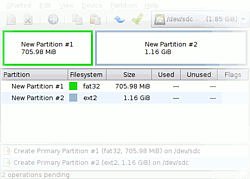
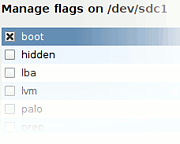
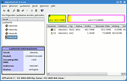
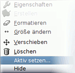

Live-USB - persistente Installation
Archivierte Anleitung
Dieser Artikel wurde archiviert, da er - oder Teile daraus - nur noch unter einer älteren Ubuntu-Version nutzbar ist. Diese Anleitung wird vom Wiki-Team weder auf Richtigkeit überprüft noch anderweitig gepflegt. Zusätzlich wurde der Artikel für weitere Änderungen gesperrt.
Zum Verständnis dieses Artikels sind folgende Seiten hilfreich:
 Dieser Artikel beschreibt, wie man eine (K|L|X)Ubuntu Desktop-CD auf einen USB-Stick
Dieser Artikel beschreibt, wie man eine (K|L|X)Ubuntu Desktop-CD auf einen USB-Stick  kopiert und derart einrichtet, dass er anschließend wie ein normales Live-System verwendet werden kann. Zusätzlich wird erklärt, wie man dieses Live-USB-System um eine persistente Installation erweitert, womit das Arbeiten wie mit einem normal installierten Linux möglich ist. „Persistent“ bedeutet in diesem Zusammenhang, dass auf einer zweiten, speziell gekennzeichneten Partition sämtliche veränderten Einstellungen des Live-Systems und vom Nutzer veränderte bzw. hinzugefügte Dateien gespeichert werden.
kopiert und derart einrichtet, dass er anschließend wie ein normales Live-System verwendet werden kann. Zusätzlich wird erklärt, wie man dieses Live-USB-System um eine persistente Installation erweitert, womit das Arbeiten wie mit einem normal installierten Linux möglich ist. „Persistent“ bedeutet in diesem Zusammenhang, dass auf einer zweiten, speziell gekennzeichneten Partition sämtliche veränderten Einstellungen des Live-Systems und vom Nutzer veränderte bzw. hinzugefügte Dateien gespeichert werden.
Die Ubuntu-Installation auf einem USB-Stick ist von Nutzen, wenn aus diversen Gründen die Verwendung eines optischen Laufwerks nicht möglich oder nicht erwünscht ist. Zudem erhält man mit dem persistenten Modus eine vollständig anpassbare Arbeitsumgebung, welche an jedem Computer mit der Fähigkeit von USB zu starten zur Verfügung steht.
Auf die benötigten Schritte für eine persistente Installation wird im Folgenden stets deutlich hingewiesen. Wenn nur ein normales Live-USB System installiert werden soll, können diese Schritte folglich ausgelassen werden. Außerdem enthält der Live-USB-Artikel alternative Installationsmethoden.
Experten-Info:
Bitte die hier beschriebene Vorgehensweise nicht mit einer Installation auf externen Speichermedien verwechseln. Auf USB-Sticks und anderen externen Speichermedien mit mindestens 4 GiB freiem Platz lässt sich Ubuntu wie auf einer Festplatte installieren.
Voraussetzungen¶
Folgendes wird benötigt:
Ein Rechner, welcher das Booten von USB-Sticks unterstützt (Im Handbuch oder auf der Hersteller-Webseite nachzulesen)
Ein (leerer) startfähiger USB-Stick mit mindestens 1 GiB Fassungsvermögen – ein Minimum von 2 GiB ist angeraten
Ein laufendes Linux-System
Eine Live-CD oder ein CD-Image (Desktop-Edition) von Ubuntu, Kubuntu, Lubuntu oder Xubuntu
Vorbereitung¶
Da im Zusammenhang mit dem "Starten von einem USB-Stick" häufig von Problemen berichtet wird, ist es ratsam, vor Beginn der Arbeiten sicher zu stellen, dass diese Funktionalität gegeben ist. Falls nicht bekannt ist, ob dem so ist, sollte an dieser Stelle der am Ende des Artikels befindliche Abschnitt Bootprobleme konsultiert werden. Besonders von Interesse dürfte hierzu der Abschnitt USB-Stick auf Bootfähigkeit prüfen sein.
Zunächst sollte man die interne Bezeichnung des USB-Sticks in Erfahrung bringen. Dazu kann man das systemeigene Partitionierungsprogramm nutzen und dort nachschauen, oder man öffnet einfach ein Terminal [2] und führt den folgenden Befehl aus (benötigt Root-Rechte!):
sudo fdisk -l
In der darauf folgenden Ausgabe bzw. in der Oberfläche des Partitionierungsprogramms sollte man seinen Stick anhand seiner Bezeichnung (falls vorhanden) oder der Größe identifizieren können. In den folgenden Beispielen dieses Artikels wird die Adresse des USB-Sticks immer mit /dev/sdX angegeben. Das X ist hierbei durch den jeweilig zutreffenden Buchstaben zu ersetzen. Hierbei kann auch gleich festgestellt werden, ob sich eine oder mehrere Partitionen auf dem USB-Stick befinden. Dies ist im Folgenden von besonderem Interesse.
Achtung!
Bei der folgenden Prozedur werden alle auf dem USB-Stick befindlichen Daten vernichtet! Wenn noch nicht erfolgt, sollte jetzt eine Sicherung aller evtl. vorhandenen Daten erstellt werden.
Manuell oder automatisch?¶
Es gibt zum automatisierten Erstellen eines persistenten Live-USB-Sticks das Pythonprogramm usb-creator. Wenn es installiert ist, findet man es bei Ubuntu-Varianten mit einem Anwendungsmenü unter
Xubuntu: "System -> USB-Startmedien-Ersteller"
Lubuntu: "Systemwerkzeuge -> Startmedienersteller"
Kubuntu: "System -> USB Startup Creator"
Zum Nachinstallieren gibt es das Programm als Paket usb-creator-gtk (Lubuntu, Xubuntu) oder als Paket usb-creator-kde (Kubuntu).
Zusätzlich zum usb-creator und zur individuellen, händischen Bearbeitung, existiert die Möglichkeit die meisten Arbeiten von einem Script erledigen zu lassen, welches von einem Mitglied der ubuntuusers-Gemeinschaft erstellt wurde.
Mit dem Live-USB-Script kann ein kompletter, bootfähiger Live-USB-Stick mit Persistentfähigkeit erstellt werden. Das Script partioniert den Stick, formatiert ihn und kopiert alle benötigten Daten. Dafür benötigt das Script nur drei Informationen:
Die Adresse des USB Sticks - also /dev/sdX
Den Pfad zum CD-Inhalt
Wie groß die Persistent-Partion werden soll (0 für keine Persistenzfähigkeit, 1 für Rest des Speicherplatzes, andere Werte werden als Angaben in MiB betrachtet)
Alle Schritte sind innerhalb des Scripts kommentiert und mit Beispielen versehen. Eingaben können auf Wunsch gespeichert werden und ermöglichen so bei erneuter Nutzung einen automatischen Ablauf mit einem Klick.
Fragen, Kritik oder Bugs können in diesem Thread gepostet werden.
Partitionierung und Formatierung des USB-Sticks¶
Zunächst muss sichergestellt werden, dass die eventuell noch bestehenden Partitionen des Sticks nicht mehr eingebunden sind. Dies ist wieder am einfachsten durch einen Befehl im Terminal [3] zu erreichen:
sudo umount /dev/sdX1
Falls sich mehr als eine Partition auf dem Stick befindet, muss der Befehl natürlich mit der entsprechend höheren Nummer wiederholt werden.(/dev/sdX2 usw.)
| GParted Hauptfenster | GParted Boot-Flag |
|  |  |
| QTParted Hauptfenster | QTParted Aktiv |
|  |  |
Variante 1: Grafisches Partitionierungsprogramm¶
Wenn nicht schon geschehen, ist jetzt das Partitionierungsprogramm der jeweiligen Ubuntu-Variante zu öffnen. Dort sucht man zunächst im Menü den USB-Stick und wechselt zu diesem.
Nun sind alle auf dem USB-Stick eventuell noch vorhandenen Partitionen zu entfernen. Anschließend kann mit der Neupartitionierung begonnen werden.
Als erstes muss eine Partition für die Daten der Desktop-CD angelegt werden. Dabei ist das Dateisystem zunächst egal, da später, wenn die Partitionen eine Bezeichnung erhalten sollen, sowieso nochmals formatiert werden muss. Verwendet man Kubuntu/Ubuntu, werden hier 700 MiB benötigt, für Xubuntu 570 MiB. Strebt man eine Installation ohne Persistenz an, ist einem selbst überlassen wie der restliche Platz verteilt wird.
Nun muss für diese Partition noch das Bootflag gesetzt werden (in anderen Worten: die Partition wird als Startfähig markiert). Setzt man den besagten Status nicht und versucht in diesem Zustand trotzdem zu starten, wird man meistens eine Fehlermeldung erhalten.
Für die Installation im persistenten Modus benötigt man eine zweite Partition. Ihr sollte eine Größe von ca. 1 Gigabyte zugeteilt werden, bei USB-Sticks bis 2 GiB am besten der ganze Rest. Dies sei angeraten, weil hier später auch die Daten des Home-Verzeichnisses abgelegt werden.
Ganz ohne Kommandozeilenbefehle [3] geht es auch in der grafischen Variante nicht. Der Grund dafür ist, dass die Partitionen noch Bezeichnungen erhalten sollen respektive müssen.
An der folgenden Stelle geht es weiter: Formatierung
Variante 2: Kommandozeile¶
Partitionierung¶
Zum Entfernen alter Partitionen und der erneuten Partitionierung wird nun fdisk mit Root-Rechten in einem Terminalfenster gestartet. Um den notwendigen Platz für eine 2. Partition zur Verfügung zu haben, welche z. B. für den persistenten Modus benötigt wird, ist es notwendig, die erste Partition mit begrenzter Größe zu erstellen. Demnach ist Punkt 7 besondere Aufmerksamkeit zu widmen und die Punkte 12. bis 16. werden nur für eine persistente Installation benötigt!
sudo fdisk /dev/sdX.
P + ⏎ eingeben um sich zunächst eine Liste der bestehenden Partitionen anzeigen zu lassen
D + ⏎ um diese zu löschen (alle bestehenden Partitionen), ggf nochmals Punkt 1 ausführen, um zu überprüfen, ob wirklich alles gelöscht wurde.
N + ⏎ zum Erstellen einer Partition
P + ⏎ eingeben für eine primäre Partition und
1 + ⏎ um diese als erste Partition anzulegen
⏎ um die Vorgabe zu akzeptieren (Partitionsbeginn am ersten (freien) Zylinder)
Partitionsgröße:
+ 7 3 4 M + ⏎ um die Größe auf ca. 700 MiB] zu beschränken (diese Option ist für die persistente Installation auszuwählen)
⏎ um die Vorgabe zu akzeptieren (gesamte Kapazität des Gerätes für diese Partition nutzen)
A + ⏎ eingeben, um das Bootflag der Partition zu setzen
1 + ⏎ wählen für die 1. Partition des USB-Sticks
T + ⏎ eingeben, um die Standardeinstellung "Linux" des Dateisystems zu ändern
Code für des Dateisystem:
6 + ⏎ ist für FAT 16 zu wählen, oder
B + ⏎ für FAT 32.
N + ⏎ erneut – zum Erstellen einer zweiten Partition für den persistenten Modus
P + ⏎ - wieder Primär
2 + ⏎ - dieses Mal als 2. Partition
⏎ - wie Punkt 6
⏎ um den restlichen zur Verfügung stehenden Platz zu verwenden
W + ⏎ um die Änderungen auf den USB-Stick zu schreiben
Damit ist die Partitionierung mit fdisk beendet.
Wer sich etwas Tipp-Arbeit sparen möchte, kann alternativ unter Verwendung von parted die komplette Partitionierung auch durch Ausführung des nachfolgenden Befehls durchführen:
sudo parted /dev/sdX "mklabel msdos" & sudo parted /dev/sdX "mkpart primary fat32 0 750" & sudo parted /dev/sdX "mkpart primary ext2 751 -0" & sudo parted /dev/sdX "set 1 boot on"
Wenn eine abweichende Partitionierung verwendet wird, ist in jedem Fall darauf zu achten, dass der 1. Partition ca. 700 MiB zugeteilt werden. Die erforderliche Größe ist in jedem Fall an die Größe der aktuell verwendete Version anzupassen (vgl. Größe der zu ladenden .iso-Datei gemäß CD-Inhalt kopieren)!
Formatierung¶
Um die 1. Partition zu formatieren, folgenden Befehl in der Kommandozeile eingeben:
sudo mkfs.vfat -F 32 -n LiveUSB /dev/sdX1
Wenn vorhin für die 1. Partition "FAT 32" gewählt wurde, ist die voranstehende Zeile so korrekt wie dargestellt. Für "FAT 16" ist folglich -F 16 zu verwenden. Bei der Zeichenkette LiveUSB handelt es sich um die Bezeichnung der Partition und ist frei wählbar.
Zum Formatieren der 2. Partition verwendet man diesmal folgenden Befehl:
sudo mkfs.ext2 -b 4096 -L casper-rw /dev/sdX2
Die Zeichenkette casper-rw darf dieses Mal nicht geändert werden! Das System sucht beim Startvorgang des persistenten Modus nach eben dieser Kennung und verwendet folglich die Partition entsprechend ihrem Zweck.
Nun sollte der USB-Stick kurz abgezogen und wieder eingesteckt werden. Dies erspart das Einhängen der Partitionen von Hand, da dies unter Ubuntu automatisch geschieht. Wenn man sich an die vorherigen Beispiele gehalten hat, werden die Partitionen unter LiveUSB und casper-rw eingebunden.
CD-Inhalt kopieren¶
Wenn Ubuntu als CD vorliegt, sollte es keine Probleme geben, auf den Inhalt Zugriff zu erlangen, da diese automatisch eingebunden wird. Anders ist es, wenn Ubuntu nur als Imagedatei vorliegt. Dann ist diese, ähnlich wie eine Partition, zuerst in einen zuvor erstellten oder anderen leeren Ordner einzuhängen.
In diesem Fall, wird zunächst ein Ordner namens ubuntuimage im Verzeichnis des Benutzers erstellt (beides ist natürlich frei wählbar):
mkdir ~/ubuntuimage
Nun wechselt man in jenes Verzeichnis, wo das Ubuntu-Image abgelegt ist und bindet es im soeben erstellten Ordner ein:
sudo mount ubuntu-10.04-desktop-i386.iso ~/ubuntuimage -o loop # die Version ist nur ein Beispiel
Nun kann die Ubuntu-CD oder der Ordner mit dem Image im Dateimanager geöffnet und der komplette Inhalt auf die erste Partition des USB-Sticks kopiert werden. Hierbei ist es zwingend notwendig, im verwendeten Dateimanager die Ansichtsoption "Versteckte Dateien anzeigen" angeschaltet zu haben. Andernfalls wird der Ordner /.disk nicht mit kopiert. Der Kopiervorgang wird nun einige Minuten in Anspruch nehmen und schließlich erhält man eine Fehlermeldung, welche besagt, dass ein "Symbolischer Link" nicht erstellt werden konnte. Die Ursache ist, dass im FAT-Dateisystem keine symbolischen Links erlaubt sind und somit der selbige nicht geschrieben werden kann. Dies ist aber harmlos und kann ignoriert werden.
Hinweis:
Ab Version 8.04 gehört ein Archivmanager zur Standardausstattung, mit dem man die ISO-Datei direkt öffnen und weiterbearbeiten kann.
Bootloader Installation¶
Da die meisten Nutzer sicherlich einen schon bekannten Bootloader vorziehen werden, liegt im Folgenden der Schwerpunkt auf GRUB. Für alle anderen wird jedoch auch die Variante mit Syslinux beschrieben.
Achtung!
In den Ubuntu-Versionen 12.04.3 und ab 13.04 in der 64-bit-Variante ist die Datei /casper/vmlinuz.efi enthalten und ist entsprechend so in die linux/kernel-Zeile einzutragen. Das gilt allerdings nicht für alle Ubuntu-Varianten. Einfach mit dem Archivmanager die ISO-Datei öffnen, und unter /casper nachschauen.
Variante 1: GRUB¶
Da GRUB (Legacy) bzw. GRUB 2 auf Ubuntu-Systemen schon vorhanden ist, kann direkt mit der Installation auf dem Stick begonnen werden. Vor dem eigentlichen Befehl zur Installation muss allerdings noch der Ordner boot angelegt werden, in den die Grub-Installation mit dem 2. Befehl dann abgelegt wird:
sudo mkdir /media/LiveUSB/boot sudo grub-install --root-directory=/media/LiveUSB --no-floppy /dev/sdX
Wurde der letzte Befehl ohne Fehler ausgeführt, sollte sich unter /media/LiveUSB/boot jetzt ein neuer Ordner namens grub mit den entsprechenden Dateien als Inhalt befinden (GRUB Legacy Liste  ; GRUB 2 Liste ).
; GRUB 2 Liste ).
Das folgende Vorgehen ist abhängig von der verwendeten GRUB-Version. Seit Ubuntu 9.10 Karmic Koala wird standardmäßig GRUB 2 benutzt.
GRUB 2¶
Nun legt man im Ordner /media/LiveUSB/boot/grub eine neue Datei namens grub.cfg an, öffnet diese im Texteditor [3] und fügt den folgenden Text ein:
Hinweis:
Der folgende Menüeintrag ist für das direkte Booten der ISO-Datei vorgesehen.
menuentry "Lucid Lynx_64.iso live" {
set root=(hd0,msdos1)
loopback loop /ubuntu-10.04.1-desktop-amd64.iso
linux (loop)/casper/vmlinuz boot=casper iso-scan/filename=/ubuntu-10.04.1-desktop-amd64.iso
initrd (loop)/casper/initrd.lz
}Dieser Eintrag erlaubt es, auf das Kopieren des Inhaltes des iso-file (s. oben CD-Inhalt kopieren) zu verzichten, und direkt ein auf die Partition kopiertes iso-file zu booten. Andererseits können mit GRUB 2 auch zuvor auf die entsprechende Partition entpackte ISO-Dateien gestartet werden. Dazu fügt man den folgenden Text in die grub.cfg ein:
menuentry "Maverick Meerkat 10.10 Live" {
set root=(hd0,msdos1)
linux /casper/vmlinuz boot=casper ramdisk_size=1048576 root=/dev/ram rw --
initrd /casper/initrd.lz
}Hinweis:
Evtl. müssen noch weitere Kernel-Parameter an das vorhandene System angepasst werden, siehe dazu auch unter Links. Beispiele:
gfxpayload=1650x1024x24,1650x1024
ramdisk_size=1048576
cdrom-detect/try-usb=true
keyb=de
locale=de_DE
bootkbd=de console-setup/layoutcode=de
quiet
splash
Um mit GRUB 2 den persistenten Modus einzurichten sind zwei zusätzliche Maßnahmen erforderlich:
eine spezielle Partition
ein spezieller Kernelparameter
Die Partition sollte ca. 2-3 GiB groß sein, je nachdem, was alles gespeichert werden soll. Sie wird eingerichtet mit
sudo mkfs.ext2 -b 4096 -L casper-rw /dev/sdXY
wobei X und Y an die Gegebenheiten angepasst werden müssen.
Der Kernelparameter lautet
.../casper/vmlinuz boot=casper persistent...
GRUB Legacy¶
Wenn noch GRUB (Legacy) verwendet wird, legt man im Ordner /media/LiveUSB/boot/grub eine neue Datei namens menu.lst an, öffnet diese im Texteditor [3] und fügt den folgenden Text ein:
## menu.lst - Ubuntu LiveUSB Desktop <Version> ## xyz oder <Datum> default 0 timeout 10 title Ubuntu Persistent root (hd0,0) kernel /casper/vmlinuz boot=casper persistent ramdisk_size=1048576 root=/dev/ram rw -- initrd /casper/initrd.lz boot title Ubuntu Live root (hd0,0) kernel /casper/vmlinuz boot=casper ramdisk_size=1048576 root=/dev/ram rw quiet splash-- initrd /casper/initrd.lz boot title Ubuntu Live (Sicherer Grafikmodus) root (hd0,0) kernel /casper/vmlinuz boot=casper xforcevesa ramdisk_size=1048576 root=/dev/ram rw -- initrd /casper/initrd.lz boot title Speichertest root (hd0,0) kernel /install/mt86plus boot
Wurde die Installation ohne den persistenten Modus durchgeführt, kann der 1. Textblock folglich weggelassen werden. Erklärungen zur Verwendung dieses Bootloaders und den möglichen Optionen in der vorstehenden Datei findet man in den Artikeln GRUB und menu.lst.
Variante 2: Syslinux¶
Für die Erstellung eines bootbaren USB-Sticks mit Syslinux als Bootloader werden folgende Pakete installiert:
syslinux
mtools
Nun gibt man diesen Befehl ein:
sudo syslinux -f /dev/sdX1
Wenn der Befehl korrekt ausgeführt wurde, sollte sich die Datei ldlinux.sys nun im Hauptverzeichnis des USB-Sticks befinden.
Experten-Info:
Optional: ldlinux in ein Verzeichnis installieren - Syslinux bietet ab Version 3.35 die Möglichkeit, auch in Unterverzeichnissen nach relevanten Dateien zu suchen. Damit ist es unter anderem möglich, durch Hinzufügen von -d /Verzeichnis die Datei ldlinux.sys in ein Unterverzeichnis zu installieren. Hierbei ist allerdings zu beachten, dass alle Dateibezeichnungen als auf jenes Verzeichnis bezogen angesehen werden, es sei denn, ein / ist vorangestellt.
Als nächstes ist der Ordner /isolinux in /syslinux umzubenennen, die darin enthaltene Datei isolinux.cfg in syslinux.cfg und isolinux.bin ist zu löschen. Will man  Xubuntu installieren, öffnet man nun die Datei syslinux.cfg und ändert sämtliche Einträge xubuntu.seed
in ltsp.seed um. Wurde die normale Installation ohne Persistenz gewählt, ist man jetzt fertig und kann das Ergebnis testen.
Xubuntu installieren, öffnet man nun die Datei syslinux.cfg und ändert sämtliche Einträge xubuntu.seed
in ltsp.seed um. Wurde die normale Installation ohne Persistenz gewählt, ist man jetzt fertig und kann das Ergebnis testen.
Anpassungen für den persistenten Modus¶
Wenn nicht schon geschehen, öffnet man im Texteditor [3] die Datei syslinux.cfg und ersetzt den vorhandenen Code ungefähr (s. notwendige und mögliche Abweichungen gleich folgend) durch folgenden:
DEFAULT persistent GFXBOOT bootlogo LABEL persistent KERNEL /casper/vmlinuz APPEND file=/preseed/ubuntu.seed boot=casper persistent initrd=/casper/initrd.lz -- LABEL live KERNEL /casper/vmlinuz APPEND file=/preseed/ubuntu.seed boot=casper initrd=/casper/initrd.lz splash -- TIMEOUT 100 PROMPT 1
Notwendige Abweichungen¶
Dateinamen in syslinux.cfg müssen den tatsächlich im ISO vorhandenen Dateien angepasst werden; zur Kontrolle schaue man sich den Ordner ~/ubuntuimage gemäß CD-Inhalt kopieren an:
Für die amd64-Version des Standard-Ubuntu muss seit Version 12.04 statt
vmlinuzüberall vmlinuz.efi stehen (siehe ~/ubuntuimage/casper/).Statt
ubuntu.seedmuss überall stehen (siehe ~/ubuntuimage/preseed/):lubuntu.seed für Lubuntu

ltsp.seed für Xubuntu
Mögliche Abweichungen¶
Mit den folgenden Einstellungen bzw. Parametern kann man das Startverhalten seinem Geschmack anpassen:
DEFAULTlegt fest, welcher Modus nach Ablauf der Zeit ohne Nutzereingabe gestartet wird. Zu verwenden sind die Einträge hinterLABEL(live, xforcevesa usw.).PROMPT 1zeigt das Auswahlmenü beim Start, PROMPT 0 startet ohne Menüanzeige sofort den Standardmodus.TIMEOUT 100bedeutet 10 Sekunden (nicht 100!) Wartezeit bis zum Start.quietunterdrückt alle Startmeldungen.splashzeigt beim Starten das Logo der verwendeten Ubuntu-Version.Ohne
quietundsplasherhält man eine Ausgabe aller Meldungen im Konsolenstil.
Anpassung der Sprache¶
Für die Verwendung des normalen Live-Systems gibt es den Vorteil, dass die Standardeinstellung der Sprache beeinflusst werden kann. Dazu öffnet man die Datei syslinux.cfg und fügt für ein deutsches Layout in den APPEND-Zeilen die Optionen locale=de_DE bootkbd=de console-setup/layoutcode=de console-setup/variantcode=nodeadkeys hinzu. In der Praxis sollte dies etwa wie folgt aus, wobei eventuell wieder die notwendigen Abweichungen" oben vorzunehmen sind:
LABEL live KERNEL /casper/vmlinuz APPEND file=/preseed/ubuntu.seed boot=casper locale=de_DE bootkbd=de console-setup/layoutcode=de console-setup/variantcode=nodeadkeys initrd=/casper/initrd.lz
Statt variantcode=nodeadkeys kann variantcode=deadacute (für französische Namen) nützlicher sein.
Ballast abwerfen¶
Inhalte für Windows¶
Im Paket der Desktop-CD befinden sich unter Umständen diverse Dateien, die nur für die Nutzung unter Windows gedacht sind. Dabei handelt es sich um die Windowsversionen einiger Open-Source-Programme, eine Präsentation dieser, Dateien für den Autostart und Wubi, ein Programm zur Ubuntu-Installation unter Windows. Wenn man keine derartige Verwendung plant, können diese Bestandteile nun entfernt werden.
Zunächst löscht man im Hauptverzeichnis diese Dateien (wenn vohanden):
autorun.inf
start.bmp
start.exe
start.ini
ubuntu.ico
wubi-cdboot.exe oder wubi.exe und umenu.exe
Kurz gesagt, alle außer den Dateien md5sum.txt und README.diskdefines.
Nun entfernt man noch die Ordner:
bin
disctree
pics
programs
Wenn alle der hier angeführten Ordner und Dateien gelöscht wurden, sind das immerhin über 30 MiB weniger. Bei Xubuntu oder neueren Versionen wie Hardy wird die Ersparnis weit geringer ausfallen, da die meisten der genannten Inhalte schon fehlen.
Weiteren Platz einsparen¶
Möchte man noch mehr Ballast loswerden, sollte das Programm Ubuntu Customization Kit weiterhelfen können. Es ermöglicht, ein Image der Desktop-CD zu bearbeiten und dabei gezielt nicht benötigte Pakete zu entfernen oder hinzuzufügen.

Problemlösungen¶
Bootprobleme¶
Wenn das Starten vom USB-Stick fehlschlägt, ist guter Rat teuer. Im Folgenden nun einige Hinweise, welche in den häufigsten Fällen weiterhelfen sollten.
BIOS Einstellungen¶
Damit von einem USB-Stick gebootet werden kann, müssen im Bios auch die entsprechenden Einstellungen vorgenommen sein. Je nach Motherbord- respektive BIOS-Hersteller wird dies in Menüs mit Bezeichnungen wie Boot, Boot Device Priority, Advanced Bios Features, Bios Features Setup, Advanced CMOS Setup oder Ähnlichem festgelegt. Im Folgenden nun einige mögliche Optionen und Tipps:
Wenn man kein USB-Gerät als erstes Boot-Laufwerk wählen kann, sollte geprüft werden, ob sich irgendwo eine Option wie Boot From Other Device auswählen lässt.
Befindet sich dort eine Option namens USB Legacy Support sollte diese eingeschaltet werden.
Als Typ sollte zuerst USB-HDD und danach USB-ZIP oder wenn vorhanden USB-Floppy versucht werden.
Versuchsweise kann die Funktion USB Hi-Speed (2.0) abgeschaltet werden.
Die Funktion USB keyboard emulation testweise anschalten.
Den Fast Boot abzuschalten kann auch versucht werden.
Bei alter Hardware, die keine Bootmöglichkeit von USB anbietet, kann man die Verwendung von Plop probieren.
USB-Port wechseln¶
Oftmals ist es so, dass sich zwei USB-Ports die gleichen Systemressourcen teilen, woraus folgt, dass immer nur einer dieser voll funktionsfähig ist. Weiterhin werden manche USB-Ports an der Vorderseite des PC nicht vollständig vom System unterstützt. In diesen Fällen reicht ein einfaches Wechseln des Ports schon aus.
Desweiteren kann auch versucht werden, weitere angeschlossene USB-Geräte mit anderen USB-Ports zu verbinden oder zu tauschen. Dies hilft manchmal, bis zu diesem Zeitpunkt unmerkliche Konflikte in der Konfiguration zu lösen.
Syslinux¶
Sollte als Bootloader Syslinux verwendet werden, ist es möglich mit dem zusätzlichen Schalter -s einen weiteren Versuch zu machen. Der Kommandozeilenbefehl [2] dafür sieht dann so aus:
sudo syslinux -sf /dev/sdX1
Damit wurde eine äußerst kompatible Variante des Syslinux Bootloaders installiert, so dass auch problematische USB-Stick- / Motherboard- Kombinationen zur korrekten Funktion bewegt werden können.
U3-USB-Sticks¶
U3-kompatible USB-Sticks unterscheiden sich etwas von den normalen Geräten. Diese sind meist nicht bootfähig und vom Hersteller so eingerichtet, dass sich eine kleine spezielle und eine normale Partition darauf befinden. Die spezielle wenige Megabyte fassende Partition enthält das sogenannte U3-System, welches unter Windows ein CD-Laufwerk simuliert. Dieser Bereich ist für den Nutzer nicht direkt verwendbar (da schreibgeschützt) und ist der Grund, warum der USB-Stick für eine Linux-Installation zunächst unbrauchbar ist: Grub2 kann nicht in den MBR installiert werden.
In den am Ende befindlichen Links ist ein Verweis auf das U3-Deinstallationsprogramm zu finden. Ob der USB-Stick anschließend starten wird, ist damit allerdings nicht zu garantieren. Es sei aber angemerkt, dass sich die U3-Software wieder installieren lässt. Die Deinstallation funktioniert nur unter Windows oder in einer virtuellen Maschine mit Windows (z.B. mittels VMWare oder VirtualBox PUEL, wichtig ist die USB-Unterstützung!).
USB-Stick auf Bootfähigkeit prüfen¶
Achtung!
Bei der folgenden Prozedur werden alle auf dem USB-Stick befindlichen Daten vernichtet! Wenn noch nicht erfolgt, sollte jetzt eine Sicherung aller evtl. vorhandenen Daten erstellt werden.
Linux-Installation¶
Unter Linux muss leider einiger Aufwand betrieben werden, um einen USB-Stick sicher auf die gewünschte Funktion testen zu können. Da dies insbesondere Einsteigern einige Schwierigkeiten bereiten kann, wurden die nötigen Schritte in ein Shellscript geschrieben und zusammen mit den benötigten Dateien hier zur Verfügung gestellt.
Zunächst lädt man das im Folgenden angehängte Dateiarchiv herunter und entpackt [4] es an beliebiger Stelle im Nutzerverzeichnis. Desweiteren benötigt man nun die korrekte Adresse des USB-Stick und merkt oder kopiert sich den Pfad zu den eben entpackten Dateien.
Nun wechselt man im Terminal [3] in das eben entpackte Verzeichnis mit dem Shellscript ubt.sh. Um es auch verwenden zu können, muss es zunächst ausführbar gemacht werden. Da man sich eh schon auf der Kommandozeile befindet, können die Ausführrechte [5] auch gleich mit dem folgenden Befehl gesetzt werden:
chmod +x ubt.sh
Nun kann das Script ausgeführt werden, wie es wie im folgenden Beispiel dargestellt ist:
sudo ./ubt.sh /dev/sdX /home/benutzer/UsbBootTest_lx
Hat man die USB-Adresse und das Verzeichnis korrekt angegeben, sollte das Script alles problemlos abgearbeitet haben und man kann nun versuchen vom USB-Stick zu starten.
Windows-Installation¶
Bedingt durch den größeren Funktionsumfang der Windowsversion von Syslinux ist es unter Windows einfacher den USB-Stick entsprechend zu bearbeiten. Zudem existiert bereits ein Programmpaket, welches den Vorgang weiter vereinfacht. Dazu lädt man sich von der Seite Pendrivelinux  die benötigten Dateien runter und folgt den dortigen Anweisungen.
die benötigten Dateien runter und folgt den dortigen Anweisungen.
Defekter Startsektor¶
Es kommt vor dass ein defekter oder falscher Bootsektor installiert bzw. noch gar keiner vorhanden ist. Dies kommt z.B. vor, wenn ein veränderter U3-Stick verwendet wird (siehe zuvor unter U3).
Das folgende Paket wird benötigt:
mbr
Nun am verwendeten Gerät den folgenden Befehl durchführen:
install-mbr /dev/sdX
Das war es auch schon. Wenn keine Fehlermeldung ausgegeben wurde, ist der neue Bootsektor jetzt installiert und es kann erneut versucht werden vom Gerät zu starten.
Probleme nach dem Bootmenü¶
Sollten Probleme nach der Auswahl im Bootmenü auftreten, findet man in den folgenden Artikeln Hilfe:
Links und Quellen¶
Quellen¶
Dieser Artikel basiert zum Teil auf Anleitungen von folgenden Webseiten:
Weitere Links¶
Intern¶
chroot/persistente-Installation - in persistente Installation von außen zur Reparatur einloggen
Booten - Booten und Bootoptionen
Extern¶
Casper boot options
- Weitere Boototionen zu CasperUSB-Stick von U3 befreien und löschen bzw. deinstallieren
- Blogbeitrag inkl. Windows-Programm, 03/2009
- Erstellt mit Inyoka
-
 2004 – 2017 ubuntuusers.de • Einige Rechte vorbehalten
2004 – 2017 ubuntuusers.de • Einige Rechte vorbehalten
Lizenz • Kontakt • Datenschutz • Impressum • Serverstatus -
Serverhousing gespendet von